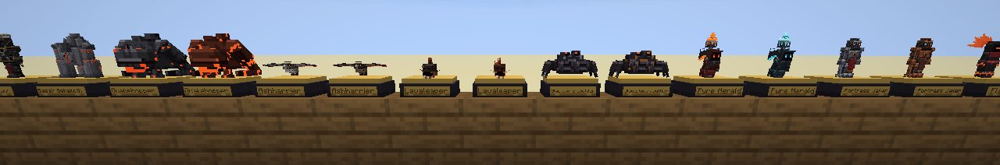
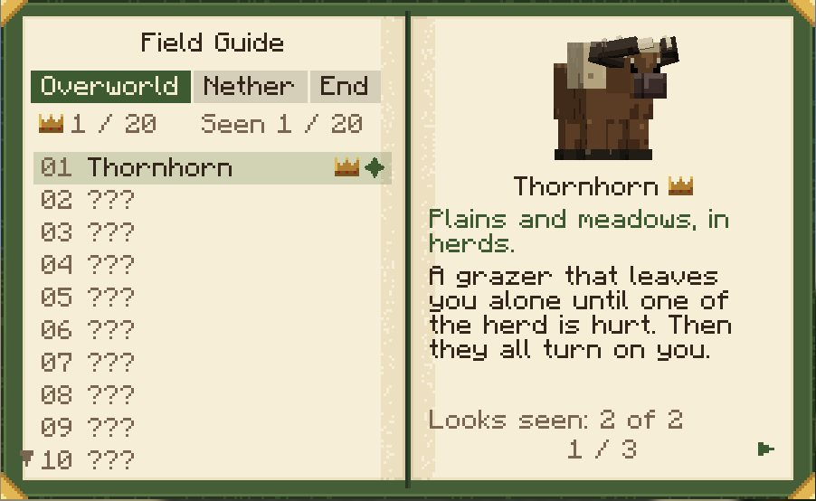
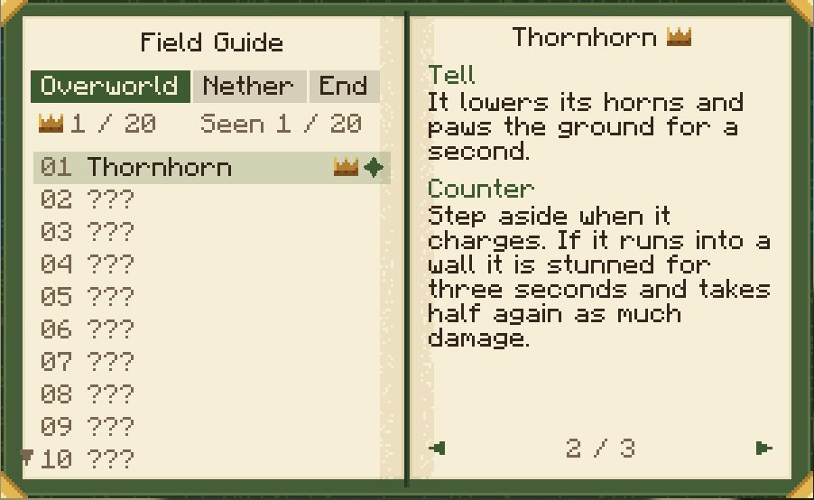
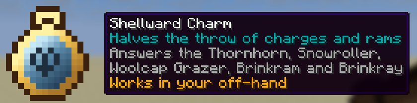

Teeming
90 new mobs across the Overworld, Nether and End, each with its own trick, a tell to read and a counter to learn.
Modpack makers: use the CurseForge download. GitHub Releases is for manual installs and testing.
What it is
90 new mobs across the Overworld, Nether and End, each with its own trick, a tell to read and a counter to learn. 20 Overworld, 30 Nether and 40 End mobs, a Field Guide that fills in as you meet them, rare trophies, signature materials with real uses and twelve counter charms. It adds no biomes, structures or dimensions, so it sits beside any pack.
How it plays
- Meet them where they live. 20 creatures in the Overworld, 30 in the Nether and 40 in the End, each at home in its own biomes, from the plains and the dripstone caves to the soul sand valleys and the void under the outer islands.
- Read the tell, use the counter. Every mob shows what it is about to do. A Thornhorn: It lowers its horns and paws the ground for a second. Then: Step aside when it charges. If it runs into a wall it is stunned for three seconds and takes half again as much damage.
- Fill in the Field Guide. Craft one from a book and any signature material. Each creature you see gets a page with its home and role; after 3 kills it shows its tell, counter, drops and looks.
- Make something of what they drop. 35 signature materials craft and brew into useful things, and 12 counter charms worn in your off-hand blunt the tricks of the mobs they answer.
- Take on the apex hunts. Basalt Behemoth (Nether), Liftstone Monolith (End) and Grand Orrery (End) are the apex mobs, with 200, 250 and 300 health, and with the default config never more than one of a kind within 128 blocks.
- Collect them all. Any of the 90 can drop its trophy, a figurine of itself on a plinth (2.5% of a player's kills, 10% for an apex mob). Fill a shelf, then the Field Guide, then the advancements.
Three dimensions
The bestiary has all 90, with their tells, counters and drops.
In game








More in the showcase.
Requirements
- Minecraft 26.3, Java 25.
- NeoForge: NeoForge 26.3.0.89 or newer for Minecraft 26.3
- Fabric: Fabric Loader 0.19.5+, Fabric API 0.161.0+26.3 or newer
- Install it on the client, and on the server too when you play on one.
Modpack makers: use the CurseForge download. GitHub Releases is for manual installs and testing.